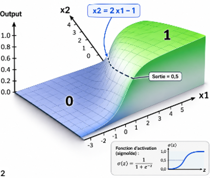

2 — Composer des transformations simples
Combiner des neurones dans un réseau multicouche
Par construction, tout neurone coupe l'espace en deux parties avec une frontière linéaire qui sépare sa zone d'activation de sa zone d'inhibition.
A supposer qu'un système veuille cibler une région circulaire associée à une catégorie donnée. On peut approximer sa géométrie par une série de 12 droites issues de 12 neurones.
Si un point (x1,x2) satisfait à toutes les zones actives des 12 neurones, il tombe dans cette catégorie.
Expérimenter par un exemple
Pilotage des feux tricolores avec une tablette tactile
Soit une tablette tactile de 200 x 400 pixels sur laquelle on présente des zones à cliquer pour allumer les feux.
Comportement attendu
Un doigt sur la tablette va pointer une coordonnée (x,y) et de sa position dépendra une action.| Le clic (x,y) a lieu | Action | Sortie |
|---|---|---|
| dans le cercle Rouge |

|
[0,0,1] |
| dans le cercle Orange |

|
[0,1,0] |
| dans le cercle Vert |

|
[1,0,0] |
| Ailleurs |

|
[0,0,0] |
Une nouvelle problématique : la masse des cas possibles
Au lieu des 4 cas du chapitre 1 avec deux interrupteurs, on a ici 200x400 = 80 000 cas possibles de couple x1,x2.Il n'est plus possible de traiter directement: Il faut que le réseau apprenne seul sur des échantillons suffisants.
Un apprentissage impossible avec le perceptron H
Pour apprendre, un algorithme cherche à réduire l'erreur ,la distance entre la prédiction et la valeur cible, pour chacun des points des données d'entraînement.Avec la fonction d'activation à échelon du perceptron, entre les zones « oui » et « non », il y a un front vertical:

En termes mathématiques, la fonction est
non dérivable : Le gradient (c'est-à-dire la valeur de la
pente) est nulle partout et indéfinie au point de bascule.
L'erreur vaut toujours -1, 0 ou +1.
L'algorithme sait dans quelle
direction corriger, mais pas de combien il se trompe. Il erre alors
par une multitude de petits pas, dont la taille est arbitraire, sans
jamais pouvoir mesurer s'il se rapproche du but.
Echec du perceptron d'origine et hiver de l'IA
Cette incapacité à apprendre sur de grands volumes a bloqué les développements et provoqué l'hiver de l'IA .
Du perceptron d'origine, seul le nom a survécu : on parle
aujourd'hui de
MLP pour Multi Layer Perceptron
Les fonctions d'activation dérivables
La percée des IA modernes est arrivée quand on a pensé à remplacer le tout ou rien de la fonction échelon par des fonctions mathématiques dérivables.